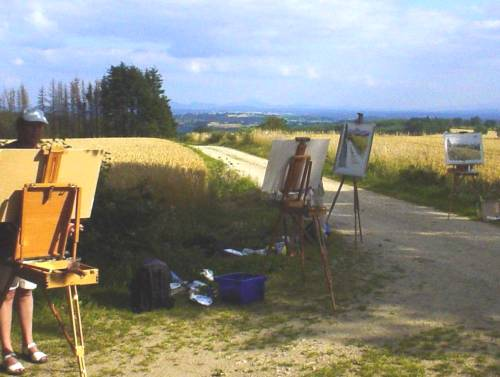
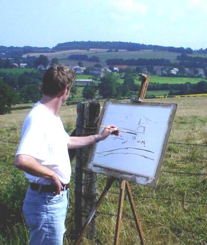
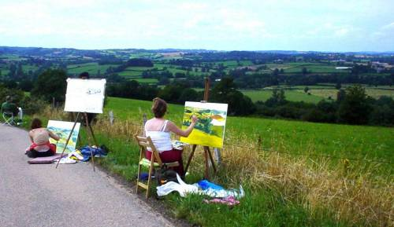
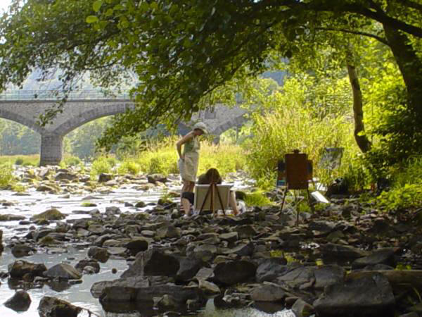
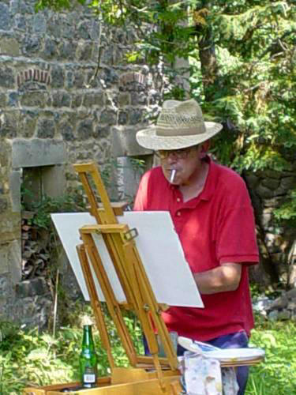
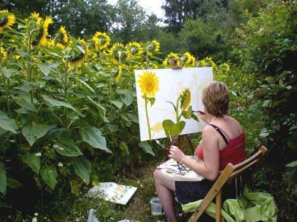
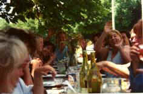

STUDIO GOUTTIÈRES
pages in English
Studio Gouttières is located in Gouttières,
in the district Puy de Dôme in
the region Auvergne in France.
The Studio provides artists, both
professionals as amateurs,
with an inspiring environment to work,
research or relax and offers a program of courses and workshops.
The beautiful Auvergne landscape, the other guests and the open
atmosphere
guarantee an inspiring setting for your stay.
The studio is equipped for painting, drawing, sculpture, etching and other
printmaking techniques,
and can host workshops music, dance and theatre, writing or
activities in any other art discipline of teachers that bring their own group.
painting and drawing.
In July and August we offer summer courses.
The workshops are dedicated to all those that want an active, creative holyday. Focus is
drawing and '' plein air '' painting in the landscape.
You bring your own
materials or pay for those you use from our stock.
Charcoal, pastels, pencil and
ink, watercolours, gouache-, acrylics- or oils, as well as a
wide range of supports are available. Style, artistic approach and choice of techniques are yours.
Teaching is focused on assisting you in developing your skills and knowledge.
Classes take approximately
4 hours per day.
There is time to work for yourself, to relax, to make tours and walks, etc...
The courtyard, a garden and parcel of land with trees and grass,
in the studios and
salle de reunion you find whatever room you need as well as a tennis table,
play cards, sound system etc.
We work from a diversity of spots in the
landscape that will provide subjects for the day.
Often swimming facilities are nearby and we bring a picnic on the spot so you can stay as long as you like.
In case of bad weather we will work from sheds or in the studio with sketches
etc.
The studio offers it's guests access to the ''atelier'' for those that
want to work
indoor.
This huge place is equipped for sculpture, painting, printmaking etc.
Many of previous guests have experimented with graphics and other techniques.
The ''atelier'' is open 24/7.
Housing and Board
Studio Gouttières offers full board in rooms for 1 to
3 persons.
Arrival and departures are in the
weekends.
Residence for two weeks in a row is advised.
In the weekend there are no classes but the studio and facilities are at the
disposition of the guests.
Prices for full
board are 550 Euro
per week courses
included,
Additional fare for a single room is 50 per week.
Extra days for early arrival / late
depart are at 50 Euro also.
We offer 150 Euro discount for all those that want to come but would not want to
subscribe for a course in Painting. Whether they work for themselves and just
share the facilities or they want to join their partners in a holyday and prefer
to tour the area or read.
After your subscription per e-mail we sent a confirmation with terms of payment,
total sum and additional information on roads, trains, facilities and materials.
Your will be asked for a first payment to confirm your subscription.
Download a folder (printable
word file)
Your teacher and host is
Wouter Verrips. (Amsterdam
1956)
Wouter started Studio Gouttières in 1993.
Wouter studied painting and sculpture at Rijksakademie van Beeldende Kunsten
in Amsterdam.
-1983-1998 he was teacher and chair of the department of fine arts at the
cultural organization of the University of Amsterdam.
- Wouter has a studio in Amsterdam as well and is active as an artist in
several countries.
- 1997 he was awarded the Prix des Volcans the most important award for fine
arts in the region Auvergne.
- Wouter currently works an extensive art project about the landscape in the
Combrailles assigned by French government.
To see samples of his work
click here.
Guest teachers and group rentals
Studio Gouttières cooperates with active artists that are also experienced teachers.
The studio provides them facilities
for an individual residence and provides group rentals, courses etc.
For reservations or more
information on our facilities and courses
please write to
desk@studio-gouttieres.com
find Gouttières on Google maps
Home
pages in French
pages in Dutch
     
'bon appetit' 